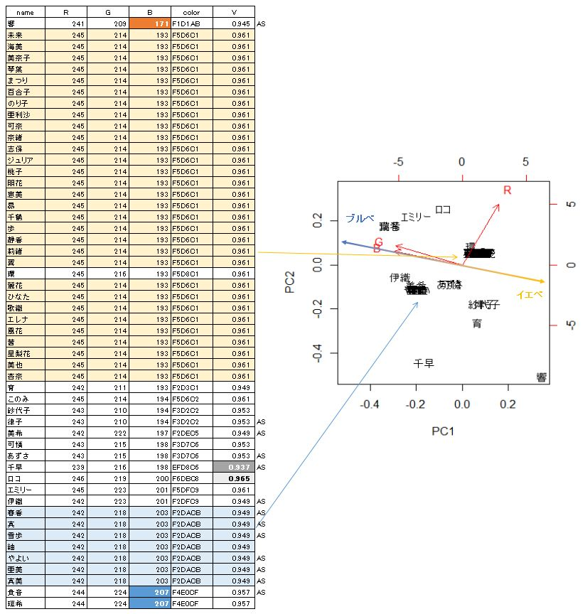
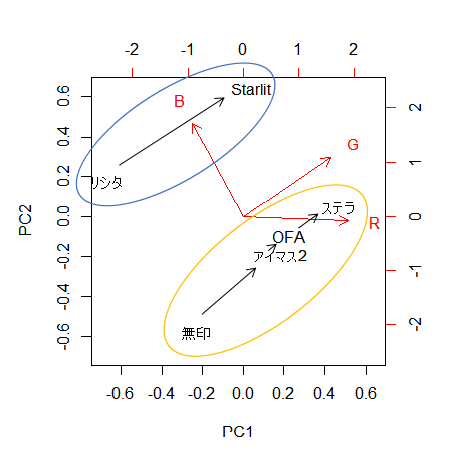

ある日こんなツイートを見ました。
最近アイドルにイメージカラー以外の色を着せるの流行ってると思うんだけどもっとドンドンやってほしい
— かめぴP (@kamepppppppp) April 30, 2021
人に似合う色は肌の色をベースにすると良いと聞いたことがありました。大きく分けると、青みがかった肌(ブルーベース、ブルベ)と黄みがかった肌(イエローベース、イエベ)があるそうです。じゃあ、アイドルに似合う服の選び方も、肌の色を基準にするのが良いのでは？と考えてしまったので、ミリシタに登場するアイドルの肌の色を調査することにしました。意味が分かりません。先駆者もいました[1]。ますます意味が分かりません。ミリシタPは変態か。
調査結果はこちら。
また、後に述べる理由で、765ASについてはシリーズごとの違いも調べました。
調査手順は以下の通りです。
肌の色がわかりましたので、表1のミリシタデータをイエベ・ブルベに分類します。なんとなく二次元マップにしたくなったので、RGB値を主成分分析して第一成分と第二成分でマップを作りました。黄色は青の補色なので、ブルベはBの値が大きい軸、イエベはBの値が小さい軸にしました。適当です。
ブルベのアイドルは瑞希、貴音、エミリー。イエベのアイドルは響、紗代子、律子、育。例えばピンク色の服を選ぶなら、瑞希、貴音、エミリーにはライラック色を、響、紗代子、律子、育にはサーモンピンクを選ぶといいらしいですよ。よく分かりませんが参考にしてください(何を？)。
図1を見ると、非常に多くのアイドルが一か所に集まっていることが分かります。というか多くのアイドルの肌の色が全く同じです。しかもカラーコードF2DACBの色は紬を除いて765AS組ばかり、F5D6C1の色は全員39プロジェクト組です。なんか妄想しちゃいますね。

肌色の選択にデザイナーの特徴が顕れるなら、他のシリーズの肌の色も調べることで、デザイナーの変遷や、キャラクターカラーの一貫性が見えるのではないか？と考えてしまいました。で、765AS組の肌の色の変遷を調べて見ることにしました。意味が分かりません。その結果が表2です。各ゲームタイトルの肌色平均値をとって主成分分析にかけたのが図2です。
表2をパッと見ても、≪無印-アイマス2-OFA-ステラステージ≫の色と、≪ミリシタ-スタマス≫の色が明らかに違っています。図2を見ると、≪無印≫系列は青みが小さい「イエベ」傾向、≪ミリシタ≫系列は青みが大きい「ブルベ」傾向にあることがわかります。またそれぞれの系列内では、新しいものほど右上にある(緑みが強くなっている)ことがわかります。時代の流れなんですかね。
また妄想します。

ミリシタおよび765ASの肌の色を調査して以下の知見を妄想しました。
注：アイドルマスター 各シリーズおよびアイドルマスター ミリオンライブ！ シアターデイズはバンダイナムコエンターテインメント社が所有するコンテンツです。